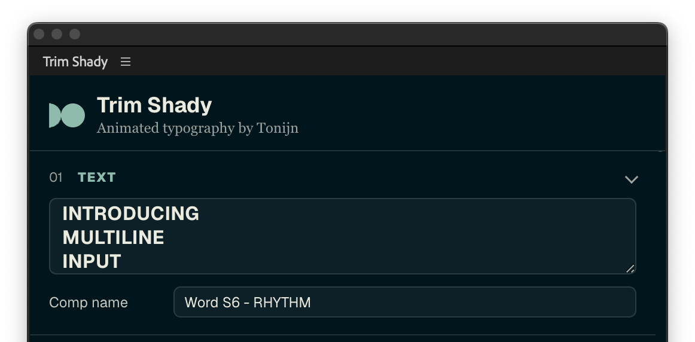
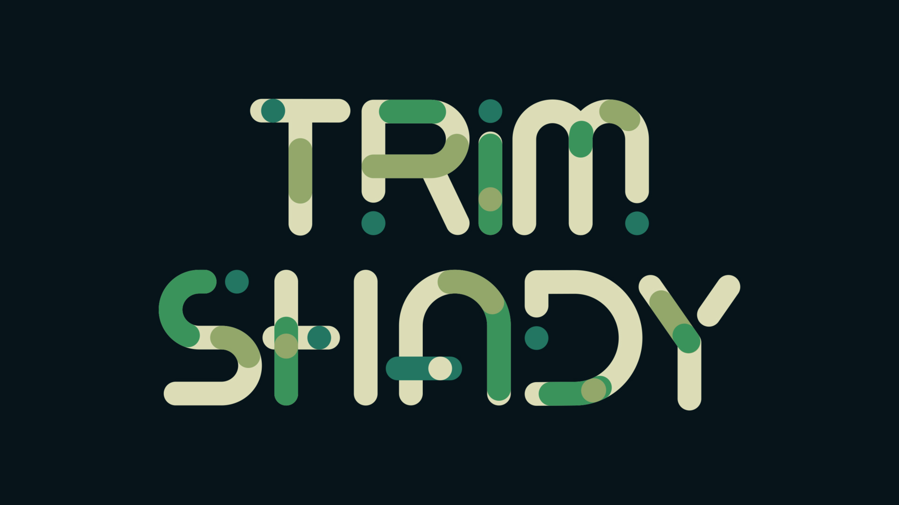
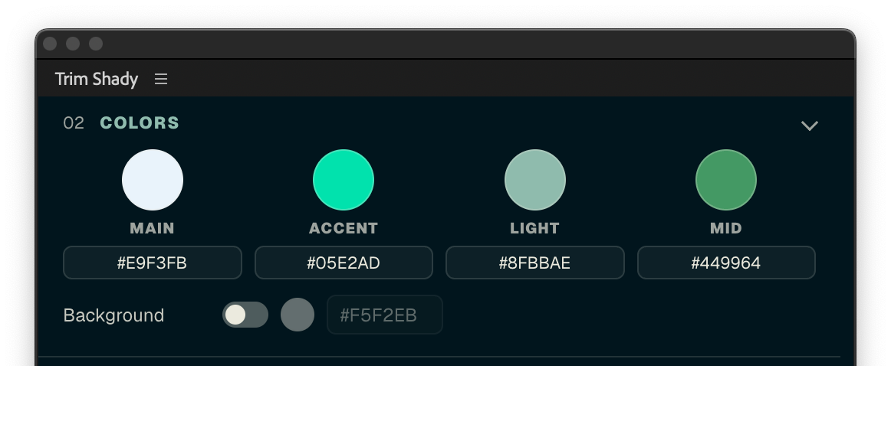
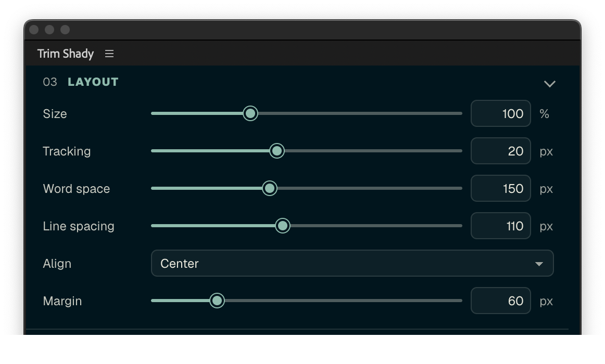
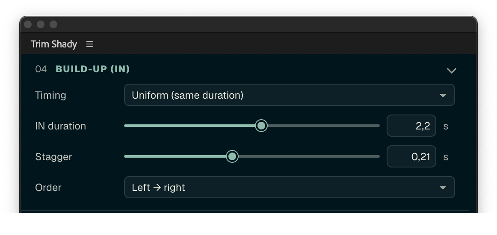
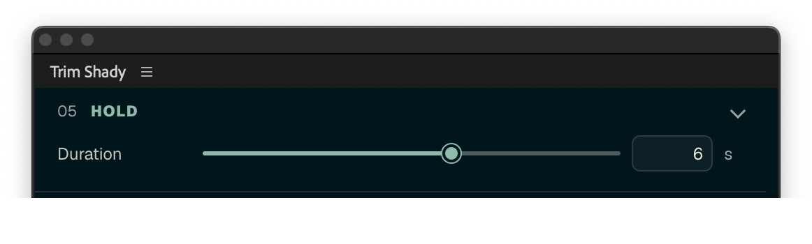
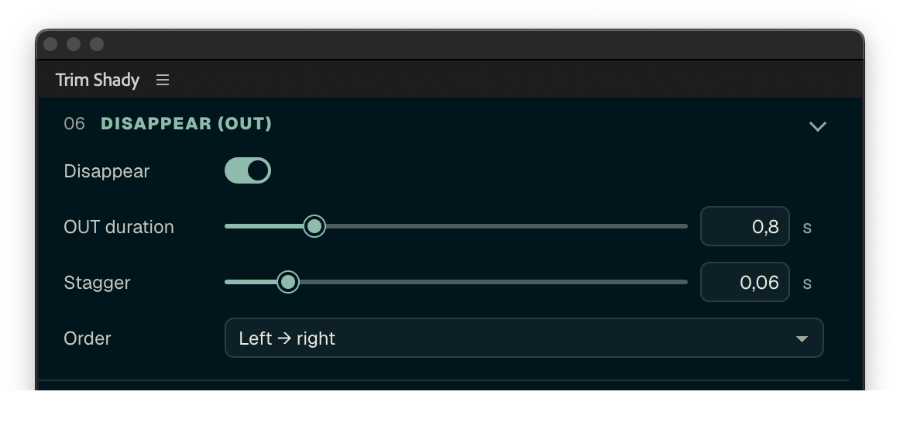
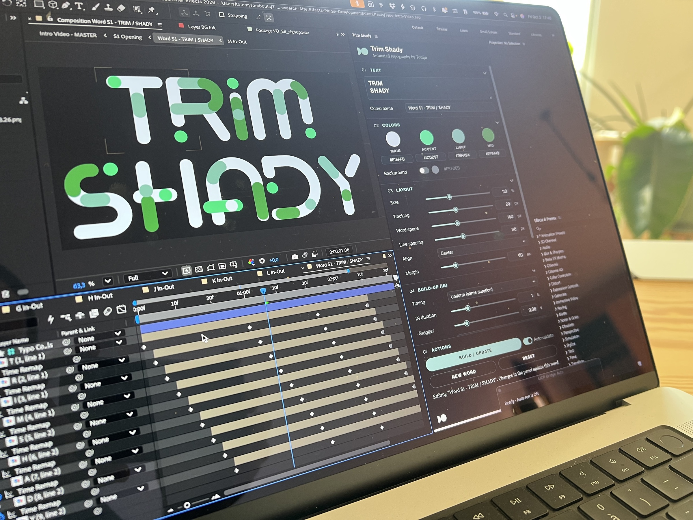
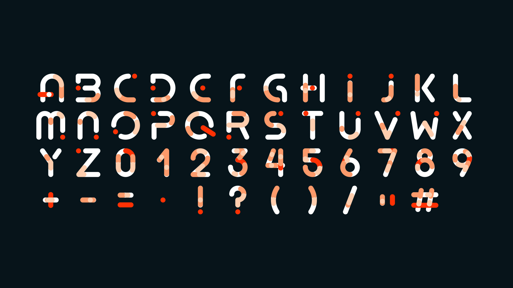

01
Multiline text input
Type a single word or a full headline. Press Enter for a new line, and every line builds up in its own rhythm.
- 47 characters: A–Z, 0–9 and 11 symbols
- Left, center or right aligned
- The comp is named for you


Meet Trim Shady
Trim Shady lives in one panel, right next to your comp. Type a word, choose your colors and rhythm, and it builds itself as native layers, ready for any project.
Make it yours
Everything happens in one panel, docked right next to your comp. Here is what it offers.
01
Type a single word or a full headline. Press Enter for a new line, and every line builds up in its own rhythm.


02
Four colors bring every character to life: Main, Accent, Light and Mid. Click a swatch to open the After Effects color picker, or type a hex value.
03
Shape the word to fit your frame. Size, tracking, word space and line spacing each have their own slider, and Align sets every line left, center or right.
Then fine-tune by eye. Every letter has its own kerning slider, so a single character can sit a little closer or further away. It all stays live in Essential Graphics, ready to keyframe.




04
Direct the rhythm in three moves. Build-up sets how the letters arrive and in which order. Hold keeps the word alive on screen. Disappear lets it leave with its own stagger, or stay.

04The alphabet
Letters, numbers and punctuation, ready for your headlines.

05Get it
06Made by Tonijn
Tonijn is a design studio that shapes communication across screen and space. Trim Shady started as our own tool, trimmed and animated one path at a time, and we made it for everyone who wants their headlines to move.
creative.COMMITTED.
07FAQ